Which bird did you see?
From kiwi in the gullies to gannets offshore, 53 kinds of bird live on or visit Kawau. Find yours below, then tap it for its story, its habits and the best places to look for it on the island.
Seabirds
Kawau is named for its shags, and seabirds are still the island's most visible residents. Pied shags nest in the pōhutukawa at Rocky Bay, gannets dive on the boat trip over, and kororā come ashore after dark.
Shore & estuary
Kawau's rocky points, sandy bays and harbour edges are worked by waders and herons at every tide. Some are rare endemics. Others, like the white-faced heron and spur-winged plover, flew in on their own last century.
Wetland & ground dwellers
Kawau's most famous birds walk rather than fly. Kiwi and weka share the gullies and bays, while pāteke and other waterbirds use the island's ponds, mangroves and sheltered inlets.
Forest birds
Kawau lies on a flight path for birds from the Hauturu / Little Barrier sanctuary. Tūī, kererū and kākā are thriving, while some forest species found on nearby sanctuaries have yet to settle here.
Hunters & travellers
Kawau's hunters work in shifts. Ruru take the night, kōtare watch from the jetty poles by day, and kāhu patrol the open ground. Each spring two cuckoos fly in from the tropical Pacific, joining a swallow that only settled New Zealand in the 1950s.
Introduced birds
Grey brought kookaburras and peafowl to Kawau, and magpies were released here too. Meanwhile acclimatisation societies were filling the mainland with birds settlers remembered from home, or hoped would eat farm pests. Most of them can be seen on Kawau today.
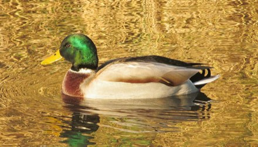
Mallardrakiraki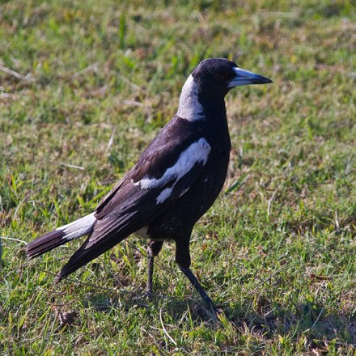
Australian magpiemakipai Common mynamaina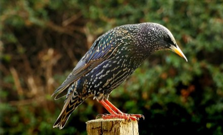
Common starlingtāringi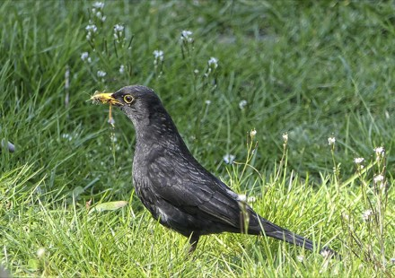
Eurasian blackbirdmanu pango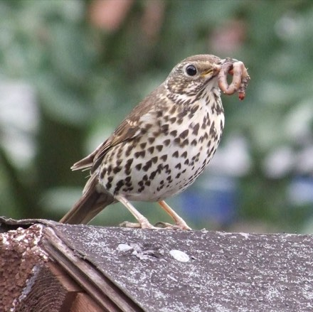
Song thrushmanu-kai-hua-rakau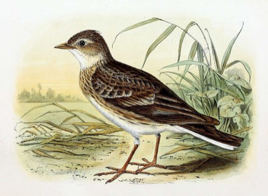
Eurasian skylarkkairaka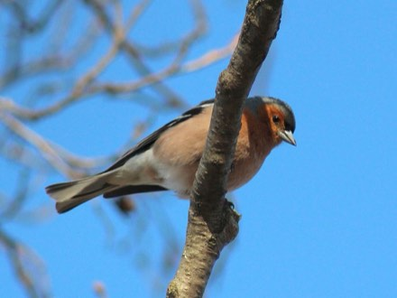
Chaffinchpahirini European goldfinchkōurarini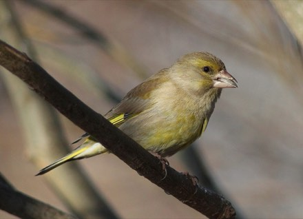
European greenfinch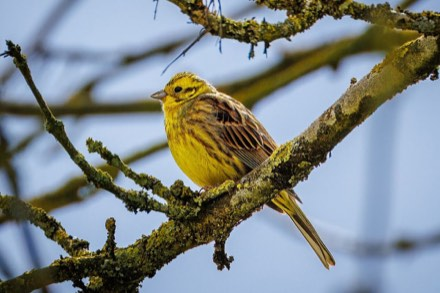
Yellowhammerhurukōwhai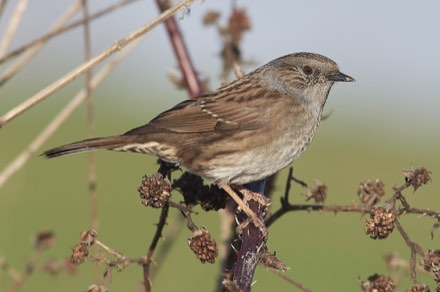
Dunnock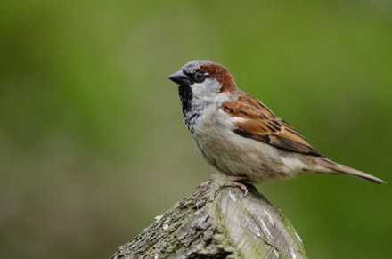
House sparrowtiuSources & credits
- Each bird's page lists the sources for its story and facts.
- Background reading on the island and its history is on the History page.
- Map elevation: Copernicus GLO-30 DEM © DLR e.V. 2010–2014 and © Airbus Defence and Space GmbH 2014–2018, provided under COPERNICUS by the European Union and ESA, via AWS Open Data. Contours at 20 m derived for this page.
Photo and illustration credits
- Little penguin: Photo: Sklmsta · CC0 1.0
- Australasian gannet: Photo: Pseudopanax (English Wikipedia) · Public domain
- Pied shag: Photo: Bernard Spragg. NZ from Christchurch, New Zealand · CC0 1.0
- Black shag: Photo: Bernard Spragg (Christchurch, NZ) · CC0 1.0
- Little shag: Photo: Pseudopanax (English Wikipedia) · Public domain
- Caspian tern: Photo: Pseudopanax (English Wikipedia) · Public domain
- White-fronted tern: Photo: Bernard Spragg (Christchurch, NZ) · Public domain
- Variable oystercatcher: Photo: Bernard Spragg (Christchurch, NZ) · CC0 1.0
- New Zealand dotterel: Photo: Bernard Spragg (Christchurch, NZ) · Public domain
- Pied stilt: Photo: Bernard Spragg (Christchurch, NZ) · CC0 1.0
- Reef heron: Photo: 葉子 (leaf0605) · CC0 1.0
- White-faced heron: Photo: Pseudopanax (English Wikipedia) · Public domain
- Spur-winged plover: Photo: Bernard Spragg (Christchurch, NZ) · CC0 1.0
- North Island brown kiwi: Photo: Maungatautari Ecological Island Trust · Public domain
- North Island weka: Photo: Pseudopanax at English Wikipedia · Public domain
- Banded rail: Photo: Pseudopanax (English Wikipedia) · Public domain
- Pūkeko: Photo: Bernard Spragg (Christchurch, NZ) · CC0 1.0
- Brown teal: Photo: Bernard Spragg. NZ from Christchurch, New Zealand · CC0 1.0
- Paradise shelduck: Photo: Bernard Spragg (Christchurch, NZ) · CC0 1.0
- Grey duck: Photo: Gary Houston · CC0 1.0
- New Zealand pipit: Illustration: Georg Forster · Public domain
- Kākā: Photo: Pseudopanax at English Wikipedia · Public domain
- New Zealand pigeon: Photo: Pseudopanax at English Wikipedia · Public domain
- Tūī: Photo: Bernard Spragg. NZ from Christchurch, New Zealand · CC0 1.0
- Bellbird: Photo: Pseudopanax (English Wikipedia) · Public domain
- Whitehead: Photo: Pseudopanax (English Wikipedia) · Public domain
- North Island robin: Photo: Pseudopanax (English Wikipedia) · Public domain
- Tomtit: Illustration: J. G. Keulemans · Public domain
- Grey warbler: Photo: Rosa Stewart · CC0 1.0
- Fantail: Photo: Bernard Spragg (Christchurch, NZ) · CC0 1.0
- Silvereye: Photo: Bernard Spragg (Christchurch, NZ) · CC0 1.0
- Morepork: Photo: Pseudopanax (English Wikipedia) · Public domain
- Sacred kingfisher: Photo: Pseudopanax (English Wikipedia) · Public domain
- Swamp harrier: Photo: Rosa Stewart · CC0 1.0
- Welcome swallow: Photo: John Robert McPherson · CC0 1.0
- Shining cuckoo: Illustration: J. G. Keulemans, in Walter Lawry Buller, A History of the Birds of New Zealand (2nd ed., 1888) · Public domain
- Long-tailed cuckoo: Illustration: J. G. Keulemans, in Walter Lawry Buller, A History of the Birds of New Zealand (1873) · Public domain
- Laughing kookaburra: Photo: Bernard Spragg · Public domain
- Indian peafowl: Photo: Peter Carson, aka Pete121 at en.wikipedia · Public domain
- Brown quail: Illustration: Broinowski, Gracius J. · Public domain
- Mallard: Photo: Tsyganov Sergey · CC0 1.0
- Australian magpie: Photo: John Robert McPherson · CC0 1.0
- Common myna: Photo: Hobbyfotowiki · CC0 1.0
- Common starling: Photo: Bernard Spragg. NZ from Christchurch, New Zealand · CC0 1.0
- Eurasian blackbird: Photo: 5snake5 · CC0 1.0
- Song thrush: Photo: Alf Beard · CC0 1.0
- Eurasian skylark: Illustration: John Gerrard Keulemans · Public domain
- Chaffinch: Photo: Estormiz · CC0 1.0
- European goldfinch: Photo: Chris Strijbos · CC0 1.0
- European greenfinch: Photo: Estormiz · CC0 1.0
- Yellowhammer: Photo: HLI-Photography · CC0 1.0
- Dunnock: Photo: Hobbyfotowiki · CC0 1.0
- House sparrow: Photo: Mathias Appel · CC0 1.0


_(31946398723).jpg){kind=link}
.jpg){kind=link}

.jpg){kind=link}
.jpg){kind=link}
_(9782577712).jpg){kind=link}
.jpg){kind=link}
_(36574554050).jpg){kind=link}


.jpg){kind=link}


.jpg){kind=link}
_(29099149685).jpg){kind=link}
.jpg){kind=link}
.jpg){kind=link}


.jpg){kind=link}
.jpg){kind=link}
.jpg){kind=link}


_(39121530410).jpg){kind=link}
_(25595831085).jpg){kind=link}

.jpg){kind=link}


.jpg){kind=link}


.jpg){kind=link}


.jpg){kind=link}
_(28169019755).jpg){kind=link}


.jpeg){kind=link}

_-_Luxembourg.jpg){kind=link}
.jpg){kind=link}
.jpg){kind=link}